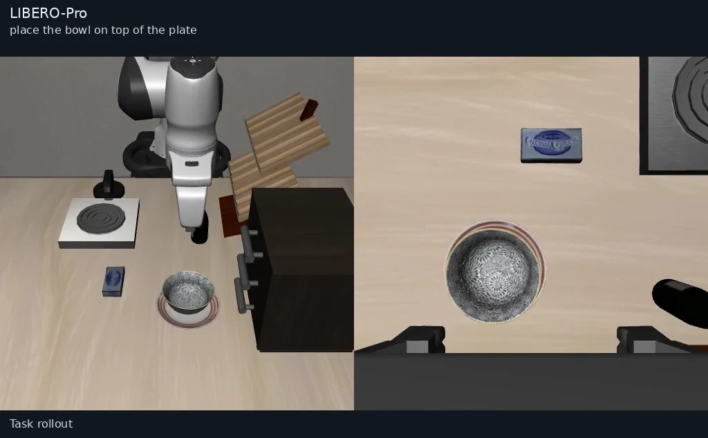
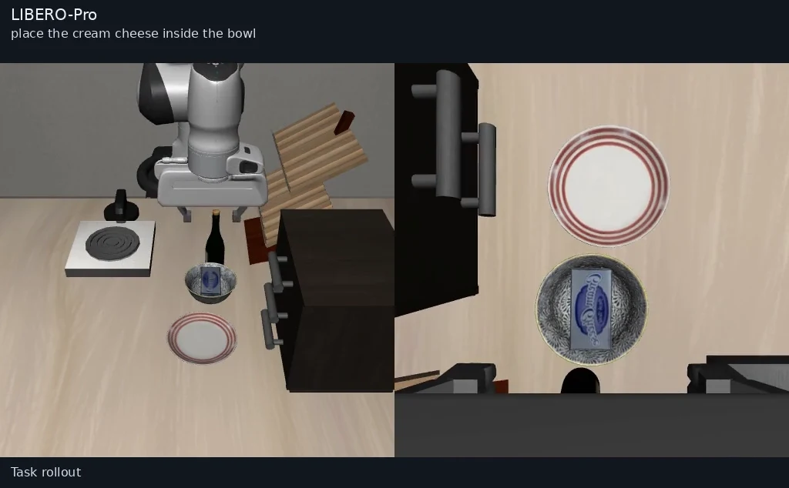
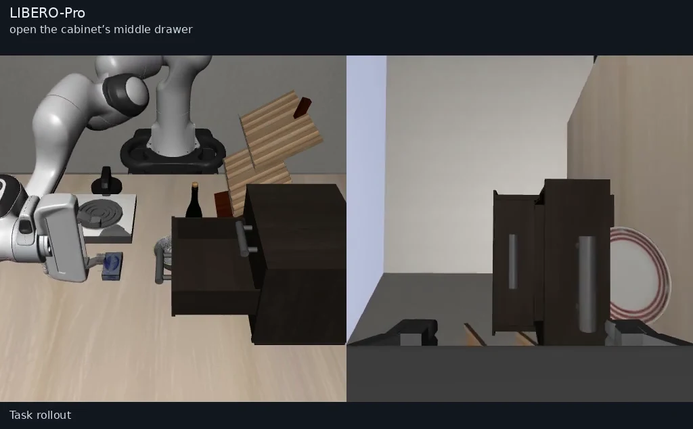
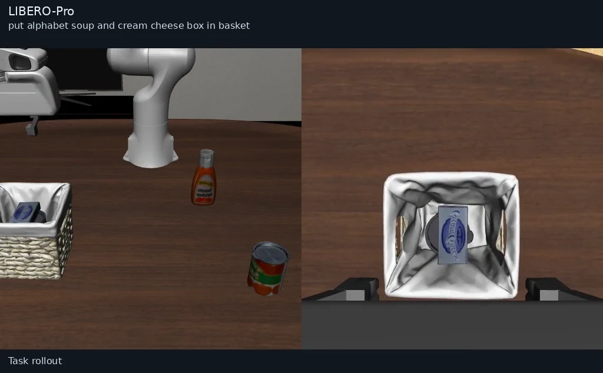
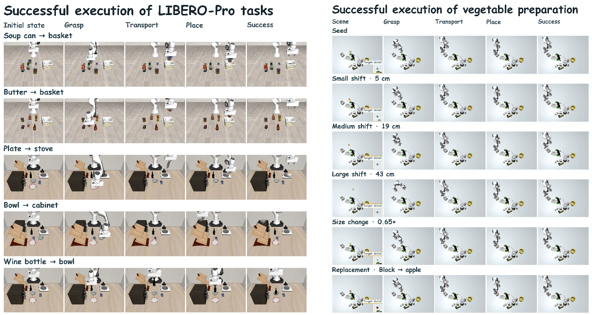
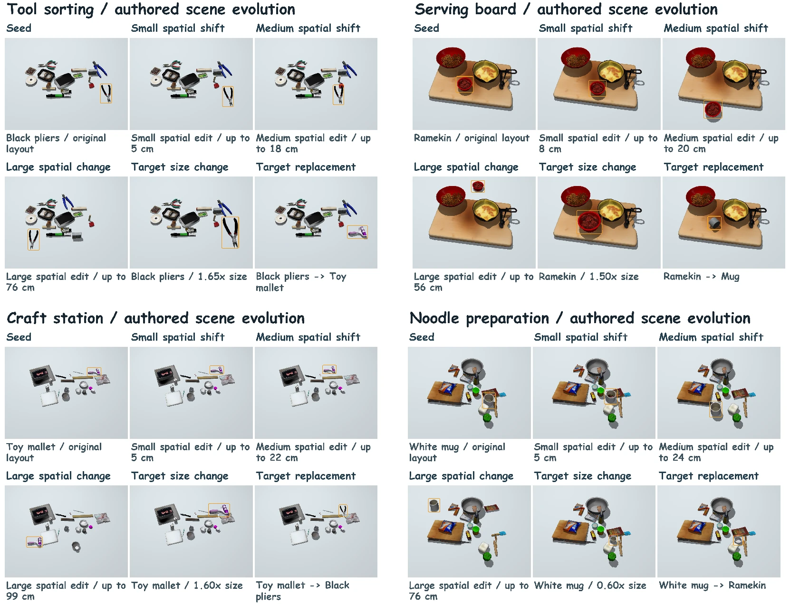

Generative simulation can automate robot environment construction, but physically valid environments are not necessarily useful for training. The challenge is to identify environments that address a policy’s failures and supervision that helps it overcome them. We introduce CoDA, a framework in which a simulation data engine and an action policy co-evolve through a shared heterogeneous memory of environment construction, policy failures, and learning progress. The memory compiles validated diagnoses from a vision-language critic into generation programs that recreate difficulties and training programs that help the policy overcome them. We further propose Text2potential to convert these diagnoses into staged potentials for action-chunk value learning, providing dense supervision for policy updates while preserving the task’s optimal policy under standard shaping assumptions. Measured learning progress guides further generation and program refinement. Across four manipulation task families, CoDA improves out-of-distribution success from 5.3% after supervised fine-tuning to 27.6%, exceeding the strongest closed-loop baseline by 9.5 percentage points with the same generation budget. On LIBERO-Pro, 15 rounds of generation and training raise success from 25% to 84% under position perturbations and from 1% to 76% under instruction perturbations.
CoDACo-Evolution of Data Engines and Action Policies
TL;DR
CoDA co-evolves what a robot practices and how it learns. Shared memory turns validated failures into better scenes and dense training feedback. OOD success rises from 5.3% to 27.6%; LIBERO-Pro position success rises from 25% to 84%.
Better environments. Better ways to learn.
One shared memory connects scene generation and policy training. Each round uses the robot’s experience to improve both.
Better practice. Better policies.
CoDA connects what a robot should practice with how it should learn.
Abstract
Contributions
- Closed-loop co-evolution. CoDA co-evolves a simulation data engine and an action policy. Each round of environment synthesis is guided by the policy’s measured learning progress, rather than scene validity or current task success alone.
- Shared heterogeneous memory. A memory shared by the generator and the policy combines episodic evidence, semantic difficulty modes, and procedural programs. The same diagnosis compiles into a generation program that recreates the difficulty and a training program that helps the policy overcome it, both indexed by difficulty mode and reusable across tasks.
- Dense supervision through Text2potential. Text2potential compiles failure diagnoses into simulator-state potentials that shape action-chunk value targets. Only chunk endpoints are needed. With a fixed, bounded potential and appropriate terminal handling, shaping preserves the policies that maximize the original task return.
- Improved out-of-distribution generalization. Across four manipulation task families, CoDA achieves 27.6% OOD success versus 5.3% after supervised fine-tuning, exceeding success-rate-guided generation by 9.5 percentage points with the same budget. On LIBERO-Pro, success rises from 25% to 84% on position generalization and from 1% to 76% on task generalization.
CoDA Method
One diagnosis. Two programs.
Generation programs recreate a difficulty. Training programs help the policy overcome it.

Build practice that targets a difficulty.
The data engine writes executable scenes with independently editable task, spatial, and object-attribute factors. Every scene passes validity checks before the policy tries it.
Ask why an attempt failed.
A vision–language critic links a failure to a scene factor and a phase of the trajectory. Targeted edits and control batches test whether that diagnosis holds.
Connect experience to reusable knowledge.
Episodic evidence becomes semantic difficulty modes. Procedural memory stores the paired programs that guide both generation and training.
Turn a diagnosis into a learning signal.
Text2potential combines completed subgoals with progress on the next one. The resulting potential shapes chunk-level value targets; estimated advantages then weight the policy’s supervised updates.
Let learning progress close the loop.
CoDA measures improvement on each difficulty mode after training. Progress and success rate guide where to spend the next round’s generation budget.
Text2potential: the two key equations
From subgoals to dense feedback
A validated diagnosis is compiled into cumulative completion predicates and progress functions. The potential counts completed subgoals and adds progress on the next one.
Each donek(s) is binary and each φk(s) lies in [0, 1). The final predicate is the task verifier. Once all m subgoals are complete, Φ(s) = m.
Shape the value of an action chunk
For a nonterminal chunk, potential-based shaping telescopes to two endpoints. There is no need to evaluate the potential at every intermediate step.
The critic learns from these shaped returns and supplies advantages for weighted policy updates. At successful completion, both the endpoint-potential term and critic bootstrap are omitted. The −βΦ(st) term remains.
With a fixed, bounded potential and appropriate terminal handling, exact action and state values shift by −βΦ(s), preserving advantages. At deployment, the policy acts without the potential or value critic.
Read the full derivation in the paper · Sections 3.4–3.5Quantitative Results
Generalization across four task families
At the same generation budget, CoDA improves average OOD success by 9.5 percentage points over scalar-feedback co-evolution. Select a family to compare all methods.
Average OOD
Average OOD
Pick-place · OOD
Articulated · OOD
Put-inside · OOD
Stack/insert · OOD
Table 1 · π0.5 · mean ± standard error over three seeds. The full table below also reports in-distribution performance.
Full results · Table 1
| Data generation | OOD by family | Average | ||||
|---|---|---|---|---|---|---|
| Pick-place | Articulated | Put-inside | Stack/insert | In | OOD | |
| π0.5 pretrained, zero-shot | 3.1 ± 0.6 | 1.6 ± 0.5 | 2.7 ± 0.6 | 1.8 ± 0.6 | 3.4 ± 0.2 | 2.3 ± 0.3 |
| + seed demonstrations (SFT) | 6.4 ± 0.6 | 4.7 ± 0.4 | 5.9 ± 0.5 | 4.2 ± 0.4 | 11.7 ± 0.4 | 5.3 ± 0.3 |
| Domain randomization | 8.8 ± 0.4 | 8.3 ± 0.6 | 7.6 ± 0.4 | 6.9 ± 0.5 | 17.2 ± 0.3 | 7.9 ± 0.4 |
| Uniform variants (SimFoundry) | 10.6 ± 0.4 | 6.9 ± 0.6 | 9.7 ± 0.4 | 6.8 ± 0.3 | 21.6 ± 0.3 | 8.5 ± 0.2 |
| Scalar-feedback co-evolution (SimWorld Studio) | 20.9 ± 0.7 | 15.3 ± 0.7 | 19.6 ± 1.2 | 16.6 ± 0.7 | 33.8 ± 0.4 | 18.1 ± 0.5 |
| Our critic, no memory | 22.4 ± 0.7 | 17.8 ± 0.9 | 18.3 ± 1.3 | 18.3 ± 0.8 | 31.7 ± 0.6 | 19.2 ± 0.7 |
| CoDA (ours) | 33.1 ± 1.2 | 24.7 ± 0.9 | 28.9 ± 1.3 | 23.7 ± 1.0 | 39.4 ± 0.5 | 27.6 ± 0.5 |
Robustness to position and instruction changes
On LIBERO-Pro, explore position and instruction perturbations across suites, then compare CoDA after 5 or 15 rounds.
Overall · position perturbations
Overall · position perturbations
Overall · instruction perturbations
Object · position perturbations
Object · instruction perturbations
Goal · position perturbations
Goal · instruction perturbations
Spatial · position perturbations
Spatial · instruction perturbations
Table 2 · success rates shown as percentages. Five- and fifteen-round results are separate measured checkpoints. ASPIRE is a code-as-policy comparator; CoDA trains π0.5.
Full results · Table 2
| Method | Std. LIBERO | Object | Goal | Spatial | Overall | ||||
|---|---|---|---|---|---|---|---|---|---|
| Pos | Task | Pos | Task | Pos | Task | Pos | Task | ||
| OpenVLA | 0.765 | 0.00 | 0.00 | 0.00 | 0.00 | 0.00 | 0.00 | 0.00 | 0.00 |
| π0 | 0.942 | 0.00 | 0.00 | 0.00 | 0.00 | 0.00 | 0.00 | 0.00 | 0.00 |
| π0.5 | 0.971 | 0.17 | 0.01 | 0.38 | 0.00 | 0.20 | 0.01 | 0.25 | 0.01 |
| Human-written programs | — | 0.14 | 0.00 | 0.00 | 0.00 | 0.23 | 0.05 | 0.12 | 0.02 |
| ASPIRE (code-as-policy) | — | 0.98 | 0.95 | 0.81 | 0.45 | 0.51 | 0.60 | 0.77 | 0.67 |
| CoDA (π0.5), 5 rounds | 0.971 | 0.90 | 0.86 | 0.80 | 0.58 | 0.76 | 0.72 | 0.82 | 0.72 |
| CoDA (π0.5), 15 rounds | 0.974 | 0.91 | 0.88 | 0.83 | 0.64 | 0.78 | 0.76 | 0.84 | 0.76 |
Co-evolution over rounds
(a) Average OOD success as accepted environments per task family increase; the dashed line marks the Table 1 comparison. (b) Difficulty modes entering, staying in, and leaving memory each round; labels count generation programs reused from other task families. (c) OOD success gained per round by CoDA and by generation guided by task success rates.

Ablation Studies
Failure-diagnosis critic
| Critic | OOD success (%) ↑ | Refuted (%) ↓ | Human agr. (%) ↑ |
|---|---|---|---|
| Qwen3-VL-235B (open weights) | 24.9 ± 0.8 | 27.5 | 73.8 |
| InternVL3-78B (open weights) | 25.7 ± 0.7 | 24.1 | 76.3 |
| Claude Opus 5 | 26.1 ± 0.6 | 20.3 | 81.5 |
| GPT-5.5 (default) | 27.6 ± 0.5 | 18.2 | 82.4 |
Critics with lower human agreement produce more diagnoses that the control batches refute, yet every critic outperforms generation guided by task success rates — even Qwen3-VL-235B exceeds that baseline by 6.8 points. Best and second best highlighted.
Text2potential
| Training signal | OOD success (%) ↑ | Steps to 25% OOD (k) ↓ | Agreement (%) ↑ |
|---|---|---|---|
| Sparse verifier only (Φ ≡ 0) | 22.3 ± 0.8 | 31 | — |
| Potential from task description | 24.6 ± 0.7 | 29 | 95.3 |
| Free-form dense reward, not a potential | 23.5 ± 1.0 | 33 | 72.4 |
| Frozen actor: Q-weighted selection only | 21.4 ± 0.9 | — | 96.8 |
| Text2potential without refinement | 26.1 ± 0.6 | 27 | 95.9 |
| Text2potential (ours) | 27.6 ± 0.5 | 21 | 97.2 |
Text2potential reaches 25% OOD success in 21k policy updates versus 31k with sparse rewards alone — roughly 32% fewer updates. Deriving the potential from the failure diagnosis rather than the task description, refining it, and using the learned values to update the policy rather than only to select chunks each contribute to the gain. Best and second best highlighted.
Qualitative Results
See the policy in action.
Choose a task. Watch the complete trajectory, or jump to a key moment.
Place the bowl on top of the plate

01Pick & placeBowl → plate
02Put insideCream cheese → bowl
03ArticulationOpen the middle drawer
04Multi-stageTwo items → basket

Successful rollouts. Left: pre-defined LIBERO-Pro tasks. Right: scenes evolved by CoDA, one row per variant (spatial shifts of 5, 19, and 43 cm, a size change, and a target replacement). Columns show the initial state, grasp, transport, place, and success. Despite changes in object position, size, and identity, the policy follows the subgoal sequence encoded by the staged potential.


Scene variations generated by CoDA. For tool sorting, serving-board arrangement, craft-station organization, and noodle preparation, each panel shows a seed scene, three spatial perturbations of increasing magnitude, a target-size change, and a target-object replacement. All displayed variants pass the scene-validity checks.
BibTeX
@misc{yu2026coda,
title={CoDA: Co-Evolution of Data Engines and Action Policies},
author={Tianjiao Yu and Zhilin Ou and Yifan Shen and Xinzhuo Li and
Yuanzhe Liu and Onkar Kishor Susladkar and Fan Wang and Ismini Lourentzou},
year={2026},
eprint={2610.22362},
archivePrefix={arXiv},
primaryClass={cs.RO},
doi={10.48550/arXiv.2610.22362},
url={https://arxiv.org/abs/2610.22362}
}Template acknowledgements
This site is built upon the work of Nerfies, made available under the Creative Commons Attribution-ShareAlike 4.0 International License.